Background
The MV opens with La samaritaine, the most famous Parisian department store founded in 1870, which has been losing money since the 1970s and was closed in 2005 due to safety concerns in the building. It was later rebuilt by LVMH and reopened on June 23, 2021.
Its first architect (1915-1910) was Frantz Jourdain. If you are interested, you can read the book "Frantz Jourdain and the Samaritaine : Art Nouveau theory and criticism".
By the time the department store was completed in 1910, new movements, such as Fauvism, Cubism and the Walker Bend School, had emerged and devalued the Samaritaine style. In the 1920s, both Cognacq and Jourdain realized that the original style of the building was outdated. The glass dome and the decorative ironwork were removed. The new building, a collaboration between architects Jourdain and Henry Sauvage, was completed between 1926 and 1928 and features cream-colored stone in an Art Deco style. Similar to the original building, it uses exposed steel, but its emphasis is based more on geometric forms.
La Samaritaine was acquired by the luxury goods company LVMH in 2001. On June 15, 2005, the department store closed in order to update the 19th-century building to modern safety standards, or to restructure it, as the unions believed. The LVMH group chose the Japanese architectural firm Sanaa to renovate the building. The implementation of the new design was repeatedly blocked by the local authorities due to a failure to comply with planning requirements and a lack of visual compatibility with the surrounding buildings. In June 2015, one of the Rivoli building permits was finalized and construction began in September of the same year. The modern building's Samaritaine design features a hotel, restaurant, brewery, café, offices and housing, and is expected to be completed in 2019. However, the renovated building will not actually reopen until June 2021.
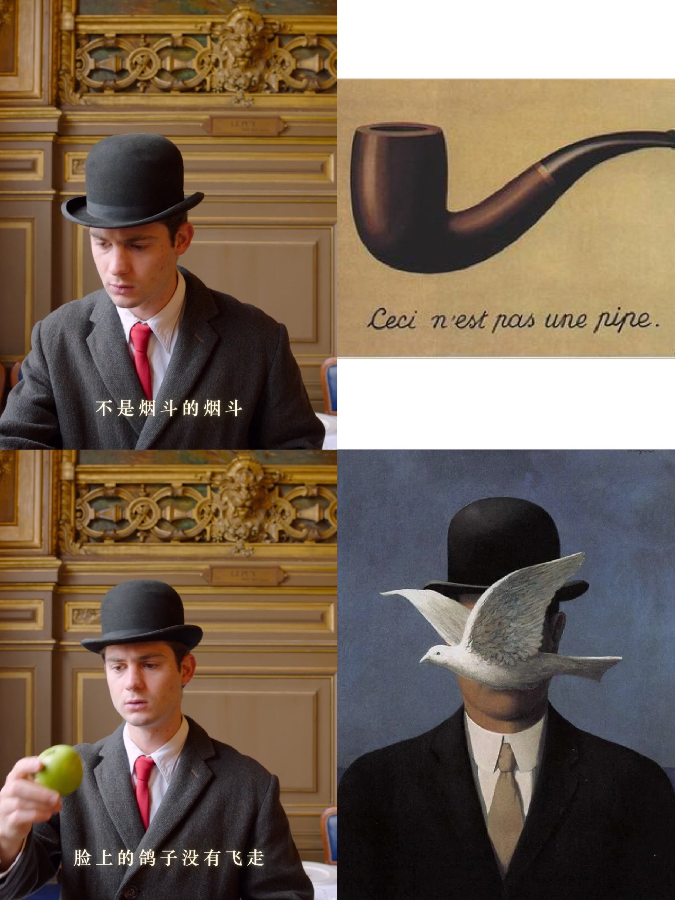
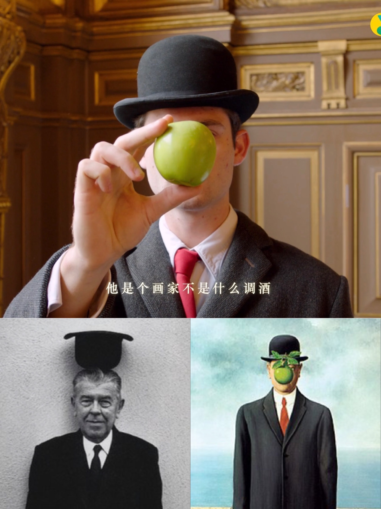
1.René François Ghislain Magritte
Belgian surrealist painter. He is known for his surrealist works with a touch of wit and many thought-provoking symbolic languages. His work challenged many observers to conceive of reality in advance, and influenced many of today's illustration styles.
- Works: "Betrayal of Image" also known as "This is Not a Pipe" 1928. "Son of a Man" 1964. "The Man in the Bowler Hat" 1964
The gentleman in the bowler hat and black coat is Magritte himself. He used a pigeon that happens to fly in front of his face to block his face. According to his own explanation, he wanted to contradict most of the Surrealist painters in Paris and despised the use of color for portraits. He only wanted to tell the viewer that the portrait on the painting was just an ordinary, middle-class citizen. Since he never painted anyone else, he certainly avoided painting himself. Sometimes, either the figure's face is turned away or it is obscured by chance. This is another characteristic of his surrealist portraits.
He says this about his work Son of Man: "[The painting] covers the face very well... This kind of thing happens all the time. We see things that are always obscured from each other, and we always want to know what is being obscured... It's not simply a question of what is blocked and what is not blocked... It is a question of the difference in visibility between what is blocked and what is not blocked."
He says of his work "Betrayal of Image", "O famous pipe, people always use this to criticize me. Yet can you fill my pipe? You can't, because what's in the painting is just a symbol, isn't it? So I would be lying if I wrote something like "This is a pipe"!
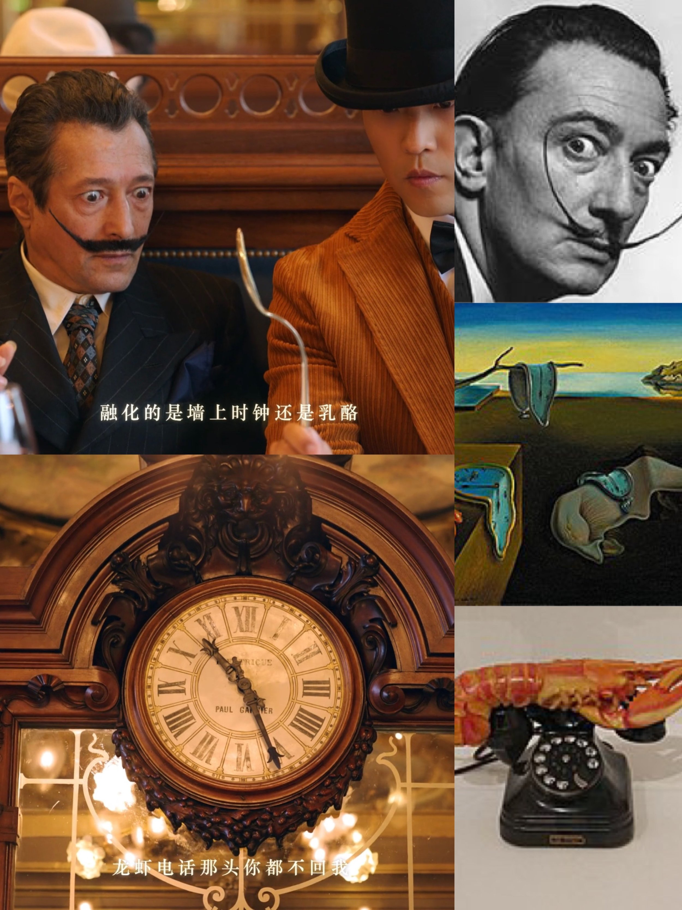
2. Salvador Dalí
A Spanish surrealist painter, he is considered one of the three most representative Spanish painters of the 20th century, along with Picasso and Miró.
- Works: "Eternity of Memory" 1931. "Lobster Call" 1936
His upturned beard is his most obvious personal characteristic. His work is a surprising mixture of grotesque dream-like images with a remarkable draughtsmanship and a painting technique influenced by the Renaissance masters.
He considers himself to be the expression of a "personal dream and hallucination revealed by Freud". In search of this surreal hallucination, they explored the consciousness of psychopaths, as Dr. Freud did, believing that their words and actions were often a sincere reflection of a subconscious world that was not seen in everyday life. For the Surrealist painters, this was some of the most precious material. Therefore, many of Dalí's works always combine concrete details and arbitrary exaggeration, distortion, omission and symbolism to create a "surreal realm" between reality and imagination, between the concrete and the abstract. Reading his paintings, one can understand all the details, but as a whole, one feels that they are absurd and horrible, defying logic, grotesque and mysterious.
The Lobster Phone is a work he made in 1936 for Edward James, a British poet and surrealist art collector. In his autobiography, The Secret Life of Salvador Dali, Dali reveals the motivation for the work in a playful tone: "I wondered why, whenever I ordered the grilled lobster in a restaurant, it didn't come with a grilled telephone."
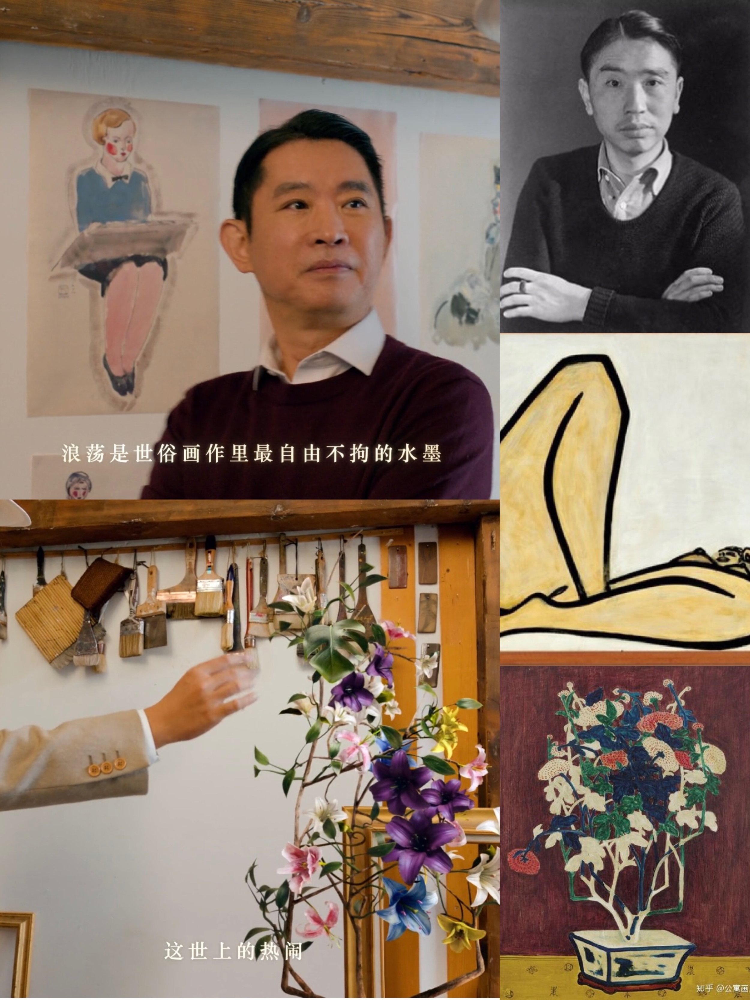
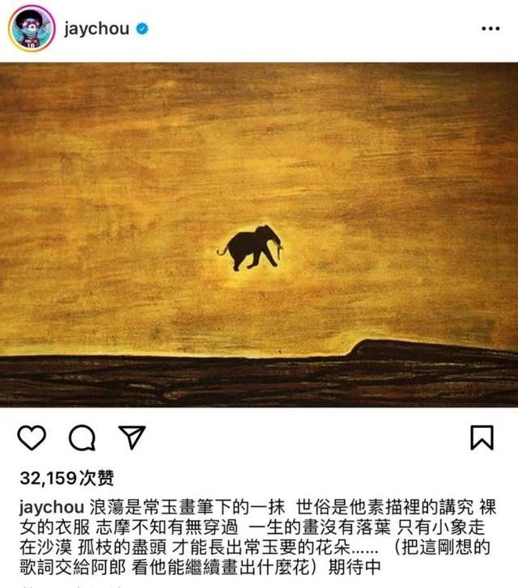
3. San Yu
French painter of Chinese descent. He is often referred to as the "Matias of the East" and the "Mondigliani of China".
- Works: “Nu”1965. “Potted Chrysanthemums“1968
SanYu went to Paris in 1921 and began a legendary life, rooted in the deep oriental mother culture while absorbing the avant-garde color expression, opening up a unique personal style that blends the East and the West, making her unique in the Parisian school of painting and having a profound influence on the local art scene. The poet Hsu Chih-mo once described Changyu's round, voluptuous and powerful nude women as having "cosmic thighs" (more on this story below).
The Nu is ostensibly a human being, but in fact, SanYu is applying the majestic creations of Chinese landscapes to the human body. SanYu borrows Western-style colors and line composition to write about the magnificent and hidden atmosphere of the East. This "Cosmic Thighs" in the eyes of Hsu Chih-mo presents, as always, the simple and exaggerated fatness of the lower limbs of nude women in SanYu's paintings, and its lines are thicker and more vigorous than those of earlier nude women, with strokes of gold and stone like knives, without the softness and elegance of his youth, which focused on the fat and fullness of the muscles, but with a more unbridled certainty and maturity. He has brought out the most forbidden part of human civilization for thousands of years in a bright and frank oriental aesthetic style. This admirable expression of maternal grandeur is integrated into the simplicity of the Chinese style of writing, and "Naked Girl with Bent Legs", as the ultimate masterpiece of his life, is an unprecedented oriental expression, which can be called the pinnacle.
Under the impact of Western modern thought, SanYu experimentally reinterpreted Chinese artistic traditions to achieve a cross-cultural aesthetic mood. Nude women, flowers and animals were the three main themes in Changyu's work, and his early works were light in color and smooth in line, with a delightful romantic mood in pastel white tones.
He drew inspiration from Chinese porcelain motifs, and tablecloths and carpets with printed text were his objects of observation. In his still life works, flowers and roots bloom quietly against a background of intense color; the moving lines and planes challenge perspective, and each object, pattern, detail, and swirl are equally strong and captivating, in the same way as Matisse's work.
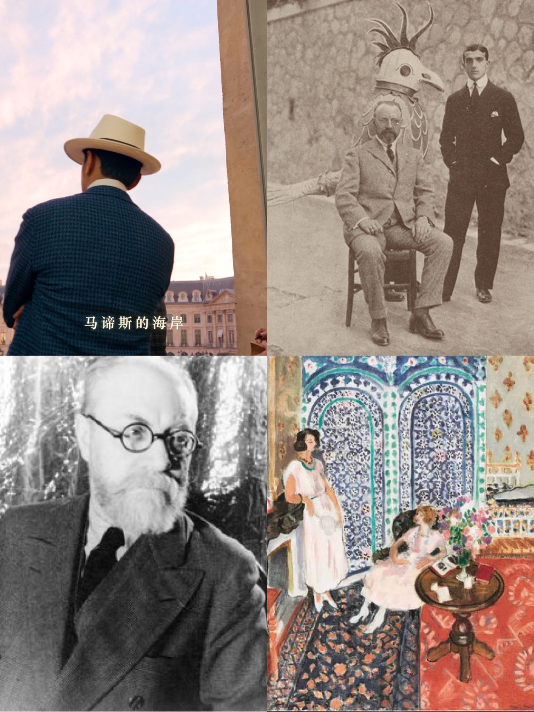
4. Henri Émile Benoît Matisse
French painter, sculptor and printmaker, he was the leader of the Fauvism. Together with Picasso and Marshall Duchamp, he brought about great changes in the plastic arts at the beginning of the 20th century. The Fauvists advocated the theory of Impressionism, which led to the first art movement of the 20th century. The use of bold and flat colors and unrestrained lines is Matisse's style. His playful structures, vibrant colors and light-hearted themes are the characteristics that made him famous and made him one of the most important figures in modern art.
- Work: “Open window”1905
His interest in Chinese art was evident as early as 1919 in the costumes he designed for the Ballets Russes dance "Song of the Nightingale". The performance was set in the ancient Chinese court. The costumes are painted directly on the fabric, the heavy jewelry is carved from wood, and Matisse instructed the makeup artist to create the actors' makeup based on Chinese masks. The brightly colored curtains are decorated with Chinese griffins and black masks, while the actors dance on stage in brightly colored embroidered robes. In a letter to his wife, Matisse said he wanted the interiors to look like "his paintings.
Matisse's passion for the Orient went far beyond the theater. He copied Chinese sculpture at the Musée Guimet and often visited the Victoria Abbott Museum to view the Chinese, Persian and Indian art collections. Although it is certain that he had seen the work of the Chinese artists around him, it is not known whether Matisse ever met with SanYu. Yanfeng Chen, a scholar of SanYu, believes that Matisse may have seen SanYu's work and painted the figure's hands and feet in a soft and subtle manner in one of his own portraits dated 1946, a technique common in SanYu's portraits from 1925 onward.
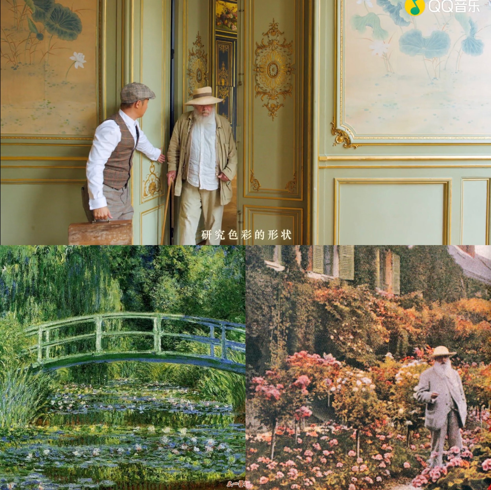
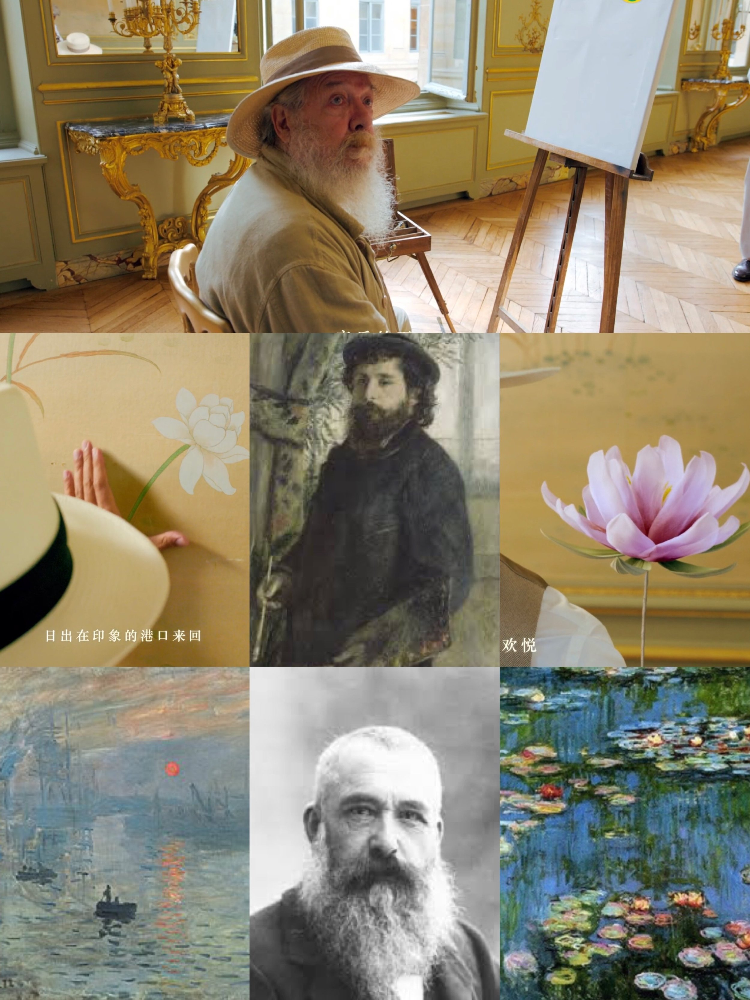
5. Oscar-Claude Monet
French painter, representative figure and one of the founders of Impressionism.
- Works: ”Impression Sunrise” 1872. “The Water Lilies”1919. “Self-portrait with Palette”
Monet excelled in the experimental and expressive techniques of light and shadow, and his most important style was the change in the way he painted shadows and contour lines; there are no very clear shadows in his paintings, and there are no accentuated or flat contour lines. In addition, his use of color is quite delicate, and he has long explored experimenting with the perfect expression of color and light, often at different times. He often made multiple depictions of the same subject at different times and under different light.
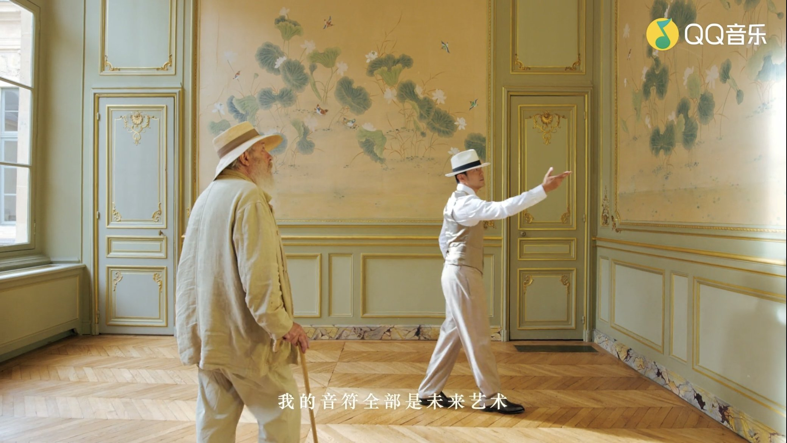
The most moving picture here is Jay taking the impressionist master to see the water lilies in Chinese painting style
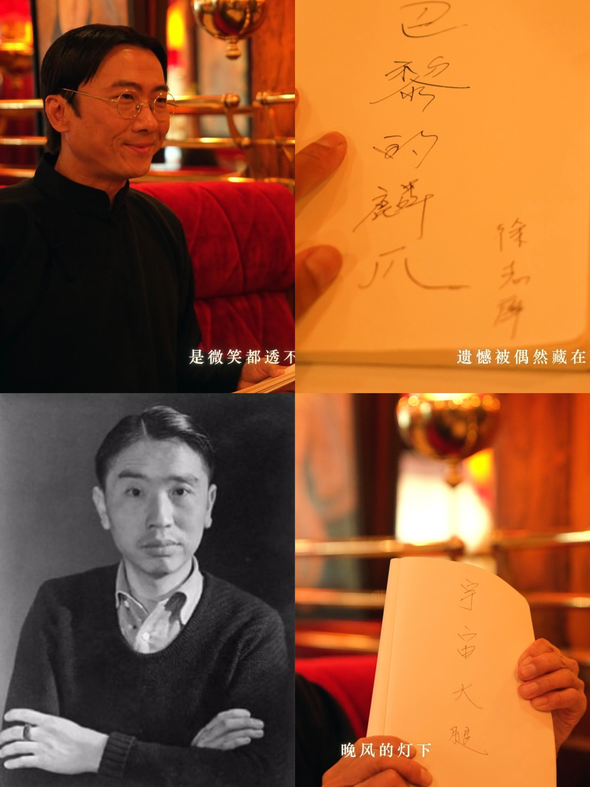
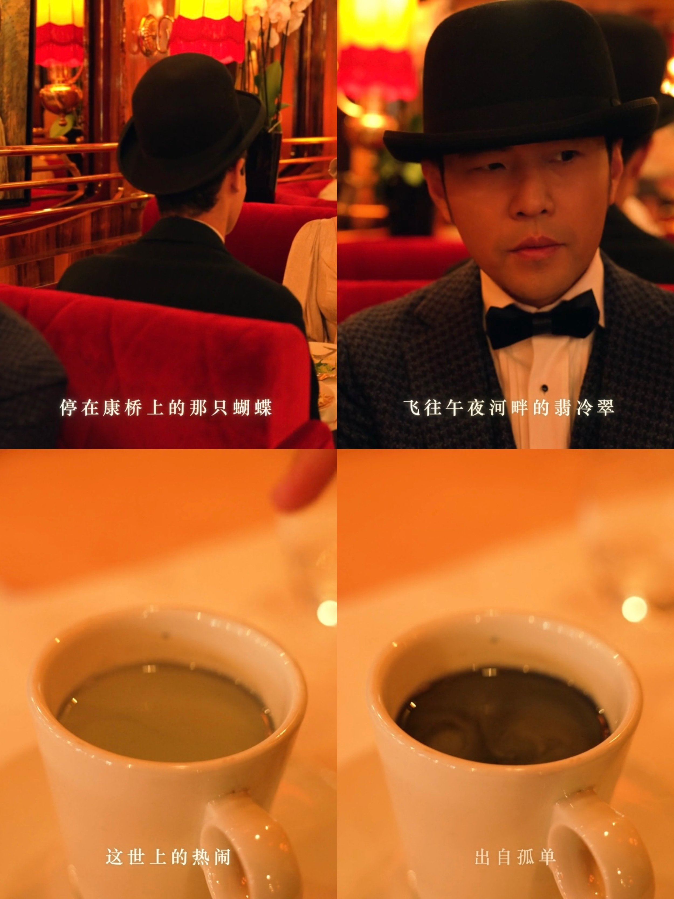
6. Hsu Chih-mo
He is a native of Haining, Zhejiang Province. He is a famous modern poet and essayist of the New Moon School in China.
- Works: “Pieces of Paris”1927. “Saying Good-bye to Cambridge Again“1928
Balzac, the great French writer, wrote: "The counter of the café is the council chamber of the people." The French Revolution, the Enlightenment, Existentialism and other political, social and cultural trends all came to society from the café. Therefore, for the French who love romance, mood and atmosphere alone, if there is no coffee as incredible as no wine, it can simply be said that the end of the world has arrived.
Hsu Chih-mo once said, "If Paris were fewer cafes, I'm afraid it would become not at all lovely."
Bing Xin said at Hsu Chih-mo's memorial meeting "Chih-mo was a butterfly, not a bee, and the benefits of women were not gained, and the disadvantages of women made him sacrifice."
(Here's the explanation: women are flowers, and if Chih-mo were a bee he would be able to collect honey and get the benefits of women. Unfortunately, Chih-mo is a butterfly, the flowers are bright and delicate, and butterflies love that. Chih-mo died in a plane crash, when he was flying to listen to Lin Huiyin's speech, Chih-mo's amorousness made him die so early. (This is also Bingxin's love for him.)
Explanation of "cosmic thighs"
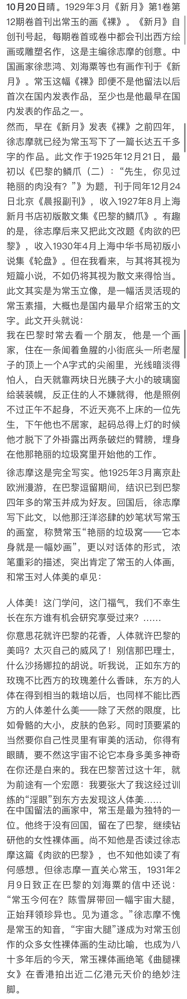
The above picture of "Cosmic Thighs" is taken from the column of "No Diary" by Chen Zishan PEN
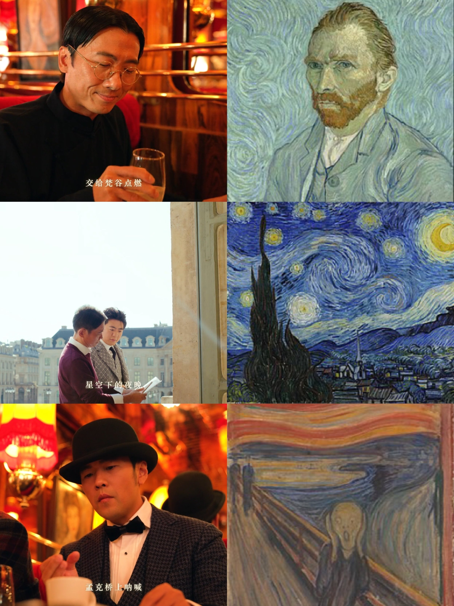
7. Vincent Willem van Gogh
Dutch Post-Impressionist painter. He was a pioneer of Expressionism and deeply influenced twentieth-century art, especially Fauvism and German Expressionism.
- Works: “The Starry Night” 1889. “Starry Night Over the Rhone” 1888
Van Gogh's early work was only in greyish tones until he met the Impressionists and Neo-Impressionists in Paris. Van Gogh incorporated their vibrant colors and painting styles, creating his own unique personal style that matured especially during his stay in Arles, France. Most of his most famous works were created during the last two years of his life, a period of lack of interest in his work, mental illness and poverty that led to his suicide at the age of 37.
Unlike the Impressionists, who sought to reveal the truth in their paintings, Van Gogh wanted to reveal a deeper truth about the human condition through his paintings. He therefore chose a subjective path, and his paintings do not only depict the landscape as one sees it, but also his inner feelings. In order to express his feelings, his landscapes are sometimes exaggerated for effect like a satirical caricature.
The painting Starry Night, with its bright moon on the right and Venus in the center left - heralds a new embrace of mood, expression, symbolism and emotion in Van Gogh's modern paintings. Starry Night was inspired by the view from the window of his sanatorium in Saint-Rémy in the south of France, where Van Gogh spent twelve months between 1889 and 1890 in his quest to escape mental illness. The starry night scene takes place at night, yet this painting, one of the few among the hundreds Van Gogh produced that year to be painted during the day, was done under entirely different atmospheric conditions. Although certain features of the sky were reconstructed from observations, Van Gogh changed the shape of the celestial bodies in the painting, adding a sense of light.
Van Gogh imbues night and nature with an emotional language that takes them away from actual appearances. Starry Night, with its predominantly vivid blues and yellows, demonstrates Van Gogh's unique color acuity and his distinctive new style of painting, in which color and paint are used to express the world beyond the work of art.
The main characteristic of Van Gogh's paintings is that they are supernatural, or at least a supersensory experience, giving a subtle sense that the viewer can feel as if the painter is painfully topographing everything in front of him and in his heart. As one of the representative painters of Post-Impressionism, Van Gogh, on the basis of his predecessor's tradition of landscape sketching, uniquely expressed the inner world of indecision and loneliness in his landscape paintings, and this expression of subjectivity and emotion was inherited by later Expressionist painters and had a profound influence on the artistic practice of later generations.
8. Edvard Munch
Edvard Munch was an expressionist painter and printmaker from Oslo Norway. He was regarded as the pioneer of the amazing Expressionist movement. His art work from the late 1800's is the most well known, but his later work is gradually attracting more attention and is quite an inspiration of many of today's artists. The Scream is his signature painting of contemporary art.
- Work: The Scream
With subjects such as life, death, love, terror and loneliness, Monkdo expresses his feelings and emotions with contrasting lines, blocks of color, and simple, generalized and exaggerated shapes.
In Paris, he learned much from Paul Gauguin, Vincent van Gogh and Henri de Toulouse-Rautrec, especially their use of color. In Berlin, he befriended the Swedish playwright August Strindberg and created his major masterpiece, The Frieze of Life, which depicts a range of themes about deep emotions such as love, anxiety, jealousy and betrayal.
The author has something to say:
When I was looking up information, I realized that Strindberg actually knew Munch, a very great playwright and one of the founders of modern drama, who focused on naturalism and expressionism. His works are more about his own life experiences and feelings, and his dramatic conflicts are about social and ethical aspects, instincts and desires, and exposing social classes. (My first design work during my school days at UAL was his book "Miss Julie" (1888), and "The Father" (1887) and "The Red Room" (1879) are also enduringly recognized theatrical design plays.)
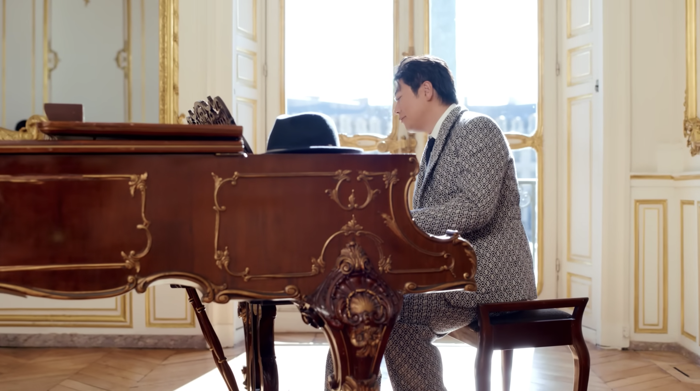
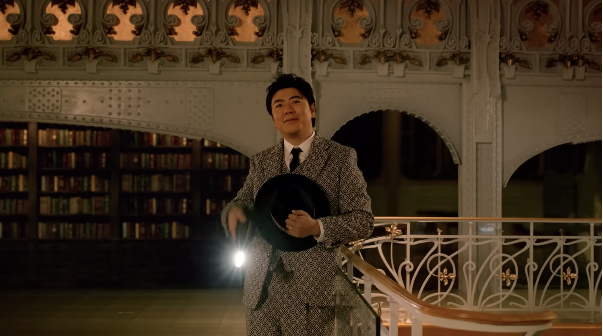
9. Lang Lang
Lang Lang, a native of Shenyang, Liaoning Province, is a pianist from mainland China. He has been called "the most talented and best iconic star of our time" by several authoritative American media, and is the first Chinese pianist to be employed by the world's top Berlin Philharmonic and the top five American symphony orchestras.
"This music video is very creative, which features elements of pop music and even more classical music. Chou got this idea five years ago. He hopes more people can become interested in art and feel that art is everywhere," Lang revealed, calling the video a "milestone."
10. Jay Chou himself
After paying tribute to so many of the greatest people and the greatest works, the final tribute is to himself.
Jay Chou wrote the lyrics of the song:
The madness of the generations, the king of music, the world bows to my music
The road is winding, I’m still creating, the melody won’t stop yearning.
The madness of the generations, the king of music, I don’t need any framing.
No frame will hold the speed of my notes, my music is futurism.
Who could not love Jay who is so musically gifted and so confident? My understanding is that "The Greatest Work" is a double entendre that illustrates both the greatness of the works of his predecessors and the fact that his works can be immortalized as the greatest. He was ahead of his time in the music field leading the future of the Chinese music scene!
“All the glamour in this world blooms from loneliness“
Since ancient times, how many writers and musicians, how many painters and musicians have not experienced the baptism of the years and the measurement of the world? They were not created overnight, they were poured into how many hearts!
Van Gogh was poor and had frequent epileptic seizures, but he still insisted on painting when he was awake, and finally died of depression. Monet's early Sunrise Impressions was ridiculed by the artists of the time and called them "Impressionist", and even though he was financially embarrassed and his wife was sick in bed, he still did not give up his work. Dali was expelled from the Surrealist group due to political conflicts and fled Europe to live in the United States for eight years, but still regained his faith. SanYu's life was extremely difficult. He could not sell his paintings at all, and for the sake of his artistic ideal, he did not create according to the world's viewpoint, so that he was still penniless when he died of gas in his home in Montparnasse .... I am not going to repeat my experience here, as it is obvious to everyone.
The loneliness of the creator is clear only to himself. All artistic creations, when they are not recognized by the world, have endured much destruction and denigration. Only our faith and love for art can make us persevere, even at the cost of our lives.